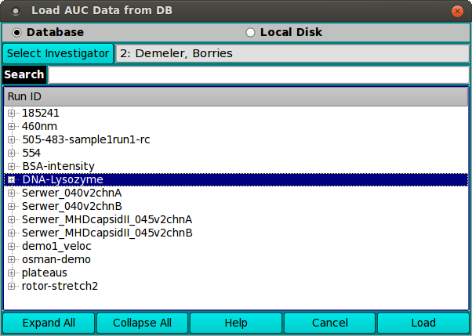
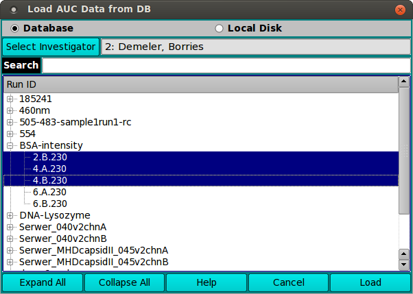
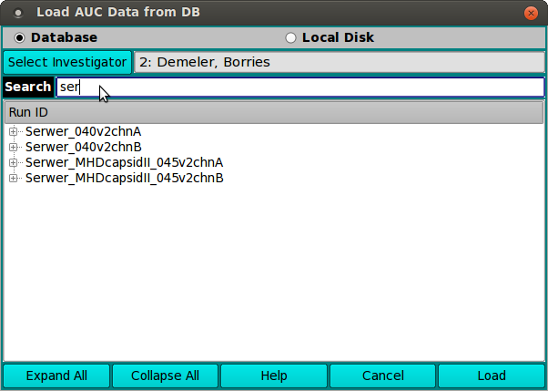

Manual
Manual
Manual
Manual
A number of UltraScan III applications load raw (AUC) experiment data for processing. These applications use the US_LoadAUC dialog class to allow the user to choose the data.
The dialog presented when a US_LoadAUC is executed allows a list of AUC data choices, labelled by runID, from database or local disk. A Search text field allows the list to be pared down to those of interest. Expanding the tree list allows you to limit the load to one or more triples within the run. After a data set is selected in the list, a Load button passes experiment data to the caller.
|
 |
|
Most often, you need not expand the list tree and need only select a top level run ID description. This effectively selects all triples for the run.
You may, of course, expand some or all of the run entries in order to select specific triples of a run.

As documented for the Search field above, typing characters in the Search box causes the list to be limited to entries that contain the characters entered, without regard to case.

Note that any selections must all be from the same run. Only one run selection is allowed. That is, the selection must be either of a single run or of triples within a single run.